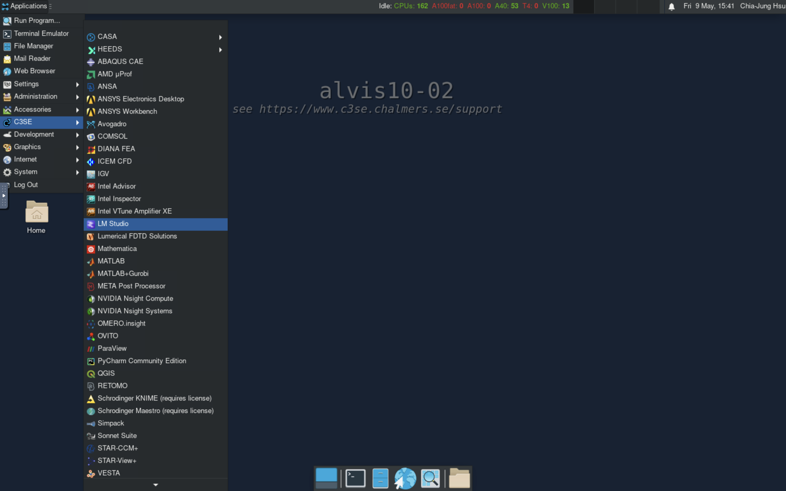
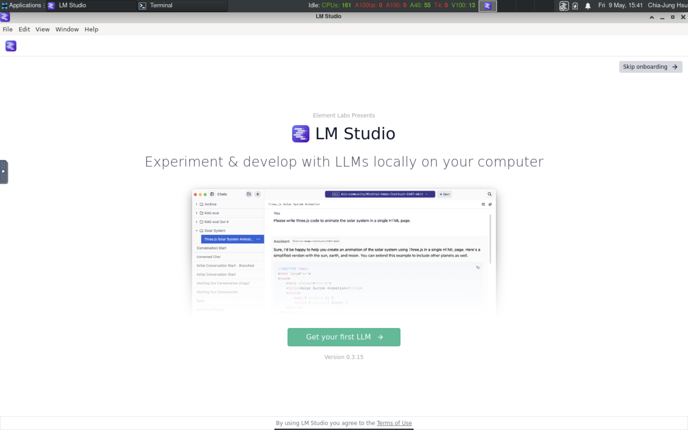
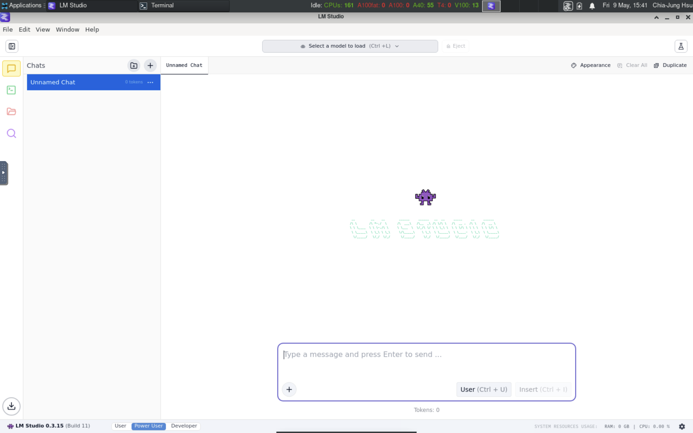
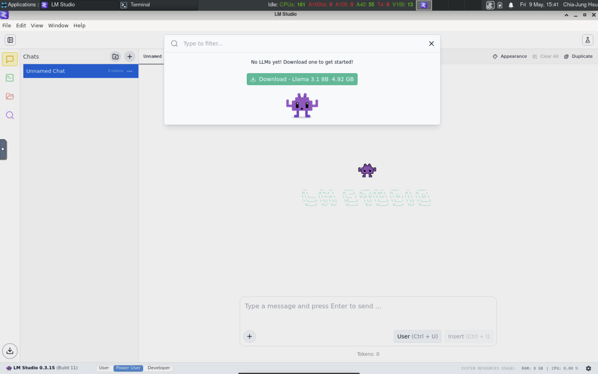
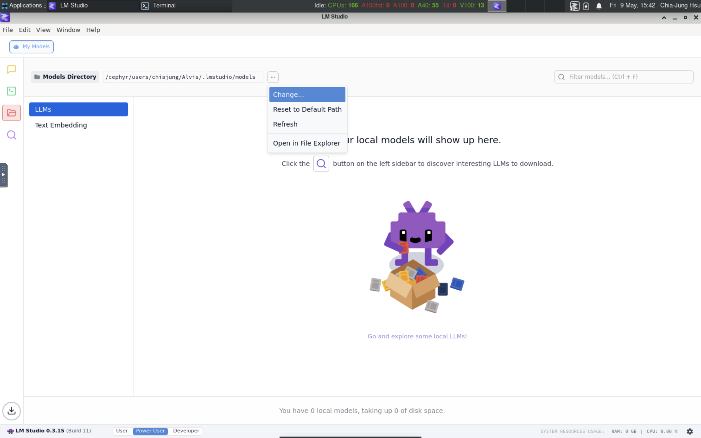
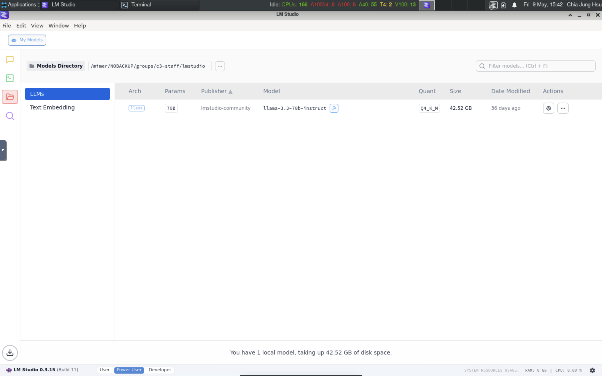
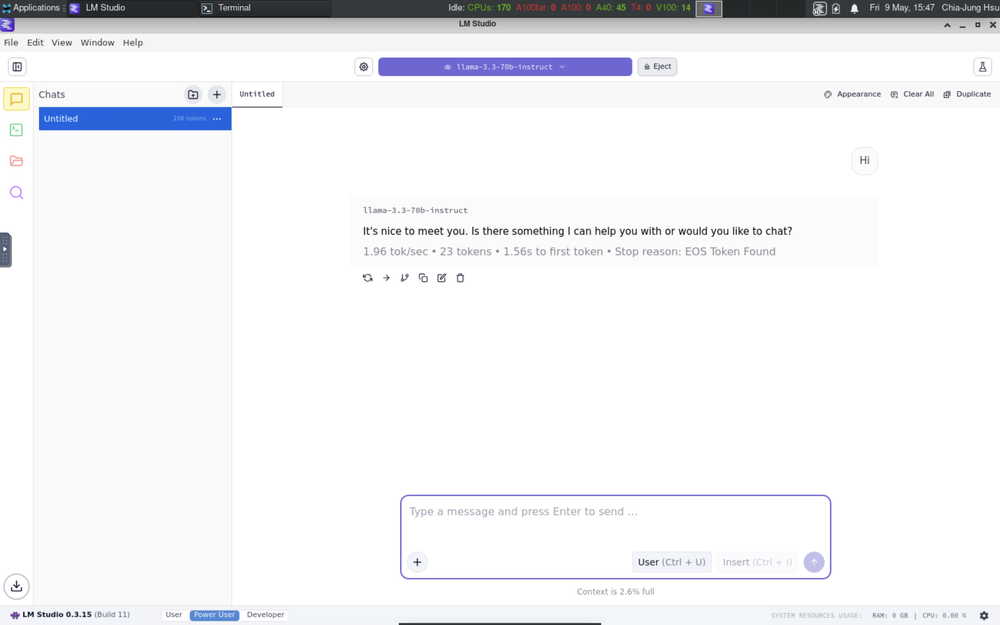
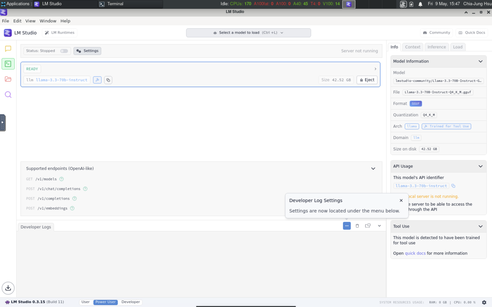
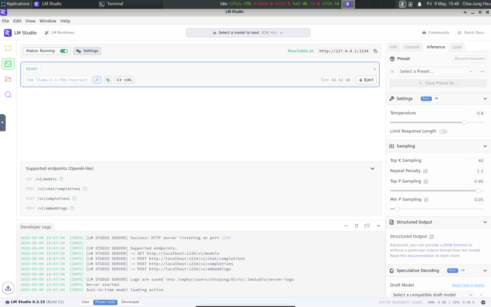

/v1/models/v1/chat/completions/v1/completions/v1/embeddings$ curl http://localhost:1234/v1/models$ curl http://localhost:1234/v1/chat/completions -H "Content-Type: application/json" -d '{
"model": "llama-3.3-70b-instruct",
"messages": [
{ "role": "user", "content": "why is the sky blue" }
]
}'$ ~/.lmstudio/bin/lms status
┌ Status ───────────────────────────────────┐
│ │
│ Server: ON (Port: 1234) │
│ │
│ Loaded Models │
│ · llama-3.3-70b-instruct - 42.52 GB │
│ │
└───────────────────────────────────────────┘$ ~/.lmstudio/bin/lms ps
LOADED MODELS
Identifier: llama-3.3-70b-instruct
• Type: LLM
• Path: lmstudio-community/Llama-3.3-70B-Instruct-GGUF/Llama-3.3-70B-Instruct-Q4_K_M.gguf
• Size: 42.52 GB
• Architecture: LlamaCheck more: ~/.lmstudio/bin/lms --help

curl to get responsevllm serve unsloth/Llama-3.2-1B-Instruct
http://localhost:8000--host <host>--port <port>Once a server is launched, in another terminal:
vllm chatvllm completevllm benchNote:
unsloth/Llama-3.2-1B-Instruct will download model
from huggingface to your HF_HOME directory./..../models--unsloth--Llama-3.2-1B-Instruct/snapshots/d2b9e3.....//v1/models/v1/responses/v1/responses/{response_id}/v1/chat/completions/v1/completions/openapi.json/docs/health$ curl http://localhost:8000/v1/modelsLLM python classvllm serve except for some
missing features like pipeline parallelism.from vllm import LLM, SamplingParams
sampling_params = SamplingParams(
temperature=0.6,
max_tokens=128,
top_p=0.9,
)
messages = [
{"role": "user", "content": "Why is the sky blue?"},
]
llm = LLM(
model="unsloth/Llama-3.2-1B-Instruct",
tensor_parallel_size=4,
)
output = llm.chat(messages, sampling_params, use_tqdm=False)
print(output[0].outputs[0].text)curl in your jobscript to get response the vLLM
serverLLM class to load model and generate some
outputtransformers serve (model is not
selected yet)/v1/chat/completions/v1/responses/v1/audio/transcriptions/v1/modelstransformers chat --model-name-or-path openai/gpt-oss-20bfrom transformers import AutoModelForCausalLM, AutoTokenizer
model_name = "openai/gpt-oss-20b"
tokenizer = AutoTokenizer.from_pretrained(model_name)
model = AutoModelForCausalLM.from_pretrained(
model_name, torch_dtype="auto", device_map="auto"
)
messages = [
{"role": "user", "content": "Explain what MXFP4 quantization is."},
]
inputs = tokenizer.apply_chat_template(
messages, add_generation_prompt=True, return_tensors="pt", return_dict=True,
).to(model.device)
outputs = model.generate(
**inputs, max_new_tokens=200, temperature=0.7
)
print(tokenizer.decode(outputs[0]))AutoModel and AutoTokenizer class to
load model and generate some output